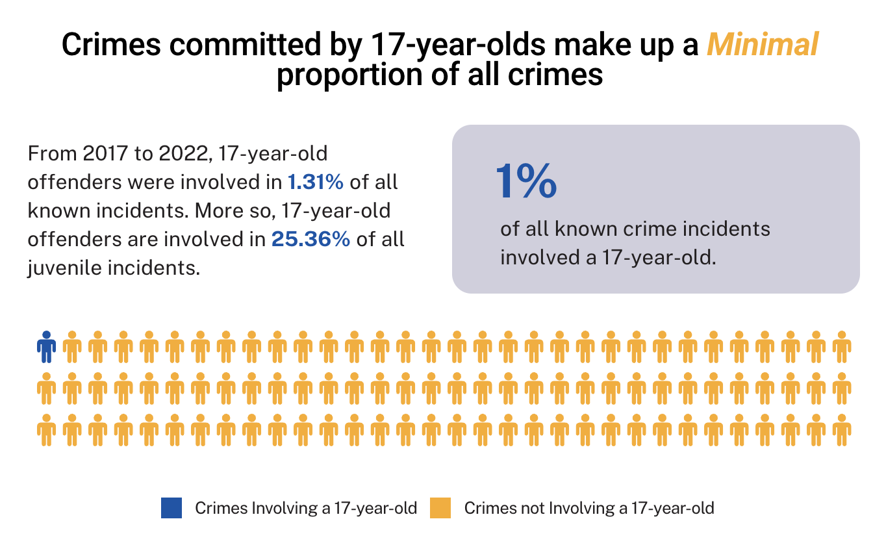
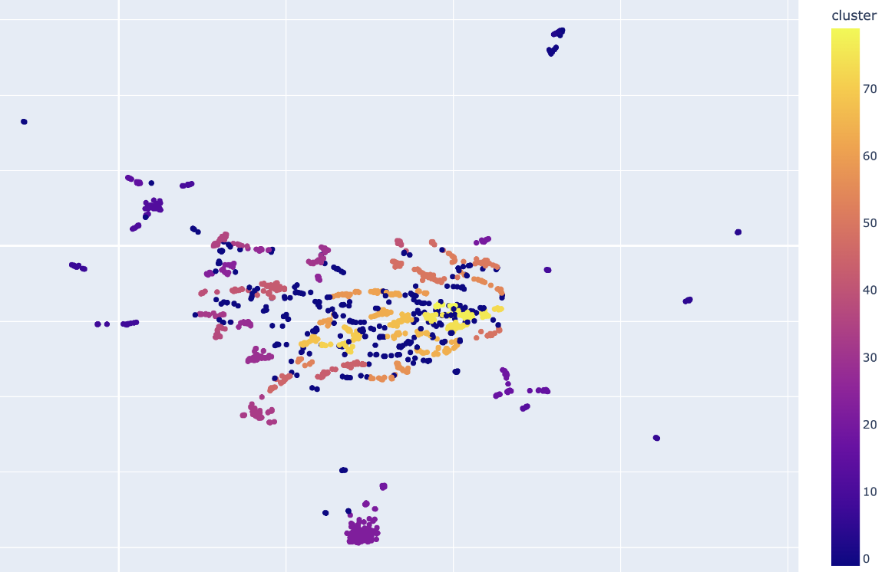
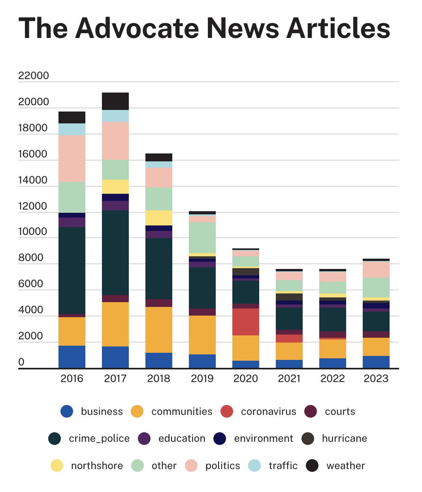
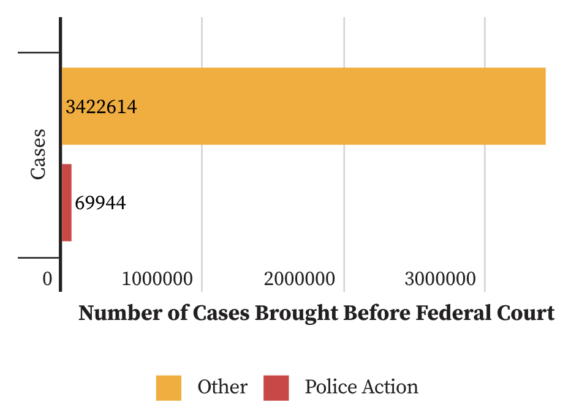
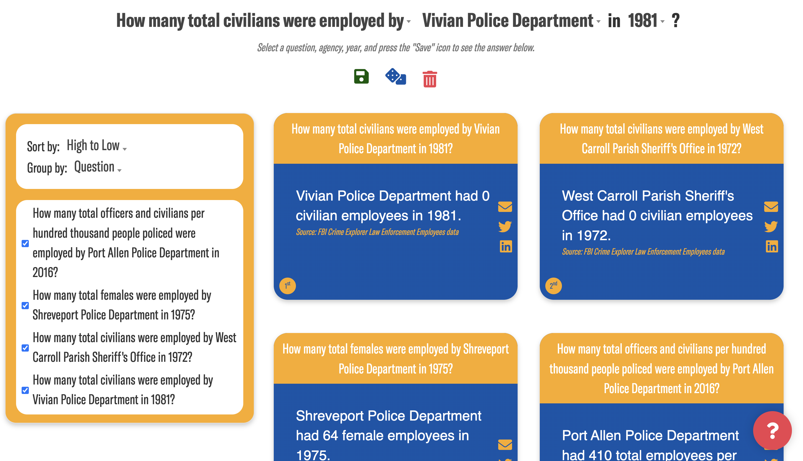
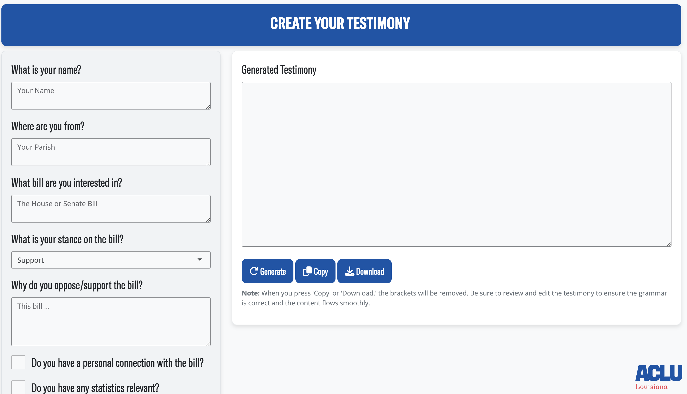
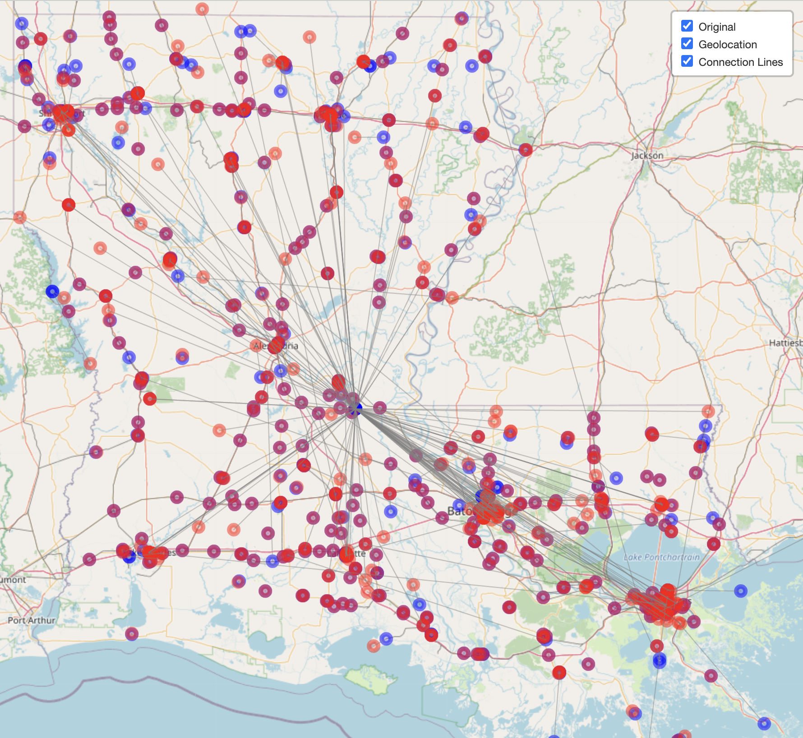

This project automates the process of extracting data from the official ICE 287(g) page of law enforcement agencies working with ICE to detain and deport immigrants. Every day, the scraper collects participating and pending agencies and PDF copies of memoranda of agreement between ICE and local law enforcement agencies. This tool ensures that data is continually captured, preventing ICE from removing previous records from public access.
Filter Projects
Tracking 287(g)
A Network-Based Examination of Detention Facility Movements
This study applies network analysis to the examination of detention transfers within the U.S. immigration detention system from mid-November 2023 to mid-February 2025. Utilizing data obtained from the Deportation Data Project, we characterize the patterns and pathways of detainee transfers across 617 detention facilities. The purpose of this research is to answer: 1) What are the common pathways of detainee movement? 2) Which facilities/states function as primary hubs for intake, transfer, or deportation?
Visualization Police Violence in Louisiana
The Visualizing Police Violence in Louisiana dashboard, launched in January 2024, consolidates data on misconduct, police killings, and personnel into a single, easy-to-access platform. The goal of this project is to enhance data accessibility, stewardship, and hold law enforcement agencies in Louisiana to account.
Key Statistics Visualization for Justice Lab Cases
The Key Statistics dashboard for Justice Lab was launched to offer the public and attorneys an accessible, digestible graphic showcasing the remarkable work of the Justice Lab initiative.

Juvenile Crime In Louisiana, by the Numbers
The Juvenile Crime In Louisiana, by the Numbers one-pager features a novel analysis of two leading arrest datasets UCR and NIBRS, revealing that youth crime is decreasing in Louisiana despite prevailing narratives.

Washington et al. V. Smith et al.
The Washington et al. V. Smith et al. data analysis aims to demonstrate that the St. Tammany Parish Sheriff’s Office discriminates against African Americans through their traffic stops. This research includes a large-scale predictive analysis of the demographics of those stopped and optical character recognition of citation PDFs. Specifically, from January through November 2023, I found that Black individuals in St. Tammany Parish were 250% more likely to be stopped for alleged traffic violations than white individuals.
Clustering and Classifying Misconduct Allegations in Louisiana
The Clustering and Classifying Misconduct Allegations in Louisiana analysis was used to solve the NLP problem of categorizing police misconduct. Specifically, I developed an algorithm to cluster misconduct allegations using TF-IDF, MiniLM, DistilBERT embeddings and HDBSCAN clustering, and to multi-classify them with Support Vector Classification. This approach effectively organizes and analyzes large sets of textual misconduct allegations, making them actionable data points.

The Advocate Media Analysis
The Advocate Media Analysis examines how media coverage may influence perceptions of crime in Louisiana. I analyzed every article from The Advocate from 2016 and found that out of 102,029 news articles, 27,799 (27%) were in the "police and crime" media category.

Predicting Bill Party Sponsorship in New York State Congress
Used an RNN on the title and summary of a bill in New York State Congress to predict whether or not the sponsor is Republican or Democrat. Many report that the legislature in New York is becoming increasingly conservative. Our model allows us to predict on a scale between 0 and 1 how conservative a bill is based on its semantics.
Hourly Weather Extraction
Inspired by the methodology of the Weather Impact on Racial Composition and Citation Activity of Traffic Stops in the United States, the Weather Data extractor provides code to download hourly historical weather information from NASA's Earth Observing System Data and Information System for any specified bounding box within the United States. The data includes precipitation rates, temperature, wind speed, and direction.
One vs. Two-year Statute of Limitation Impact Factsheet
The One vs. Two-year Statute of Limitation Impact Factsheet analysis uses data scraped from Lex Machina to challenges the claim that shorter statutes of limitations lead to more meritorious cases. Our analysis suggests that extending the statute of limitations for police action cases in Louisiana could reduce court caseloads and result in more meritorious cases.

Police Department Quick Facts
The Louisiana Police Quick Facts website provides key information on policing quickly and effectively. This project aims to make essential policing facts accessible to the public. This tool is not yet public.

Testimony Generator
Built a website that generates personalized testimonies based on user input about a bill and their connection to it. This tool helps individuals quickly create effective and tailored testimonies. This tool is not yet public.

Misdirection Model
The predicting LLM misdirection algorithm was created for the inaugural Humane Intelligence Algorithmic Bias Bounty hackathon. This predictive model is a fine-tuned version of distilbert-base-uncased model on a dataset of LLM misdirections.
Law Enforcement Agency Locator
The Law Enforcement Agency Locator analysis uses the Google Maps API to determine the latitude and longitude of all law enforcement agencies in Louisiana. This tool addresses discrepancies in previous mappings of law enforcement agency locations in the state.

How Many Within Function
Created as a supplement to the “How Many Xs Are Within Y Meters of at Least One Z?” blog post, the How Many Within code uses OpenStreetMap data to count the number of amenities within a set distance from each other. This function is useful for spatial analysis in urban planning and public services.
Pebbling a Chessboard Game
Inspired by the fascinating mathematics problem of pebbling a chessboard, this simple Java video game takes the task to a new level providing an entire board and asking the player to escape the red bounding box.
MBMBAM Transcript Analysis
The MBMBAM Transcript Analysis provides code to scrape, clean, and analyze transcripts from the podcast "My Brother, My Brother, and Me." This NLP task allows us to gain critical insights about the semantic relationships between the three hosts.